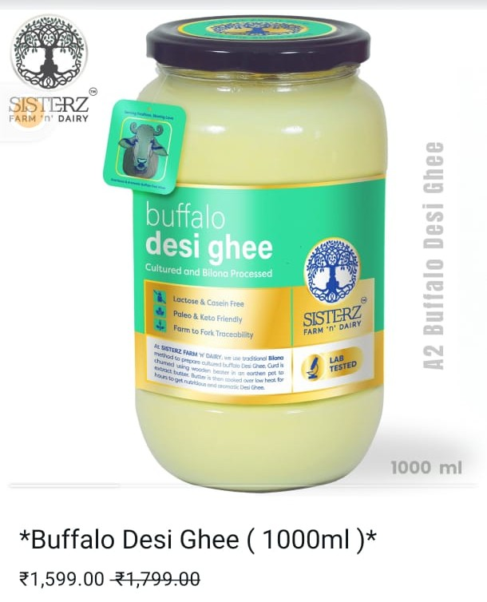
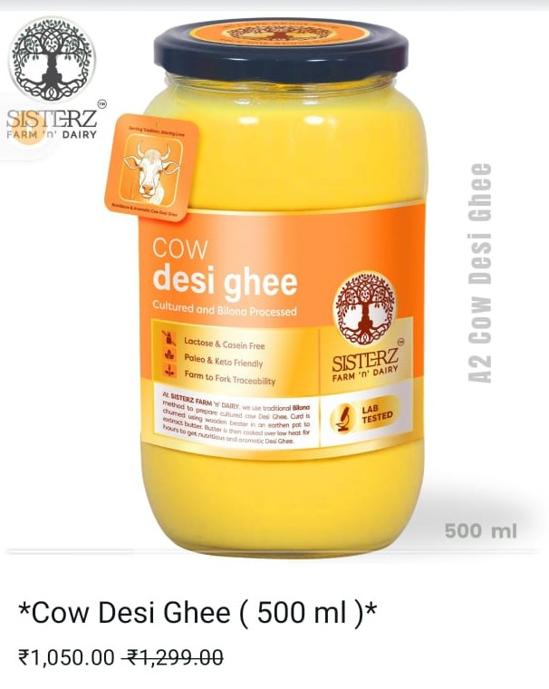

Welcome to Sisterz n Farm 🌱
We are growing pure, organic produce with love and care.
Our goal is to bring fresh, chemical-free products straight from our farm to your table.
"Asla barood rakhne se kuch nahi hota mittar, Sisterz n Farm ka ghee khana chahiye"
Our Pure Desi Ghee 🫘


Experience the richness of our homemade, pure desi ghee. Crafted traditionally and preserved for taste & nutrition.
Benefits of Desi Ghee 🫘
- Boosts Immunity: Rich in antioxidants, helps absorb vitamins.
- Improves Digestion: Supports enzyme activity and reduces acidity.
- Good for Skin: Nourishes and heals dry skin.
- Strengthens Bones: Helps in calcium absorption via Vitamin K2.
- Brain Health: Enhances memory and mental clarity.
- Heart-Friendly: Contains healthy fats when used in moderation.
- Ayurvedic Value: Detoxifies and rejuvenates the body naturally.